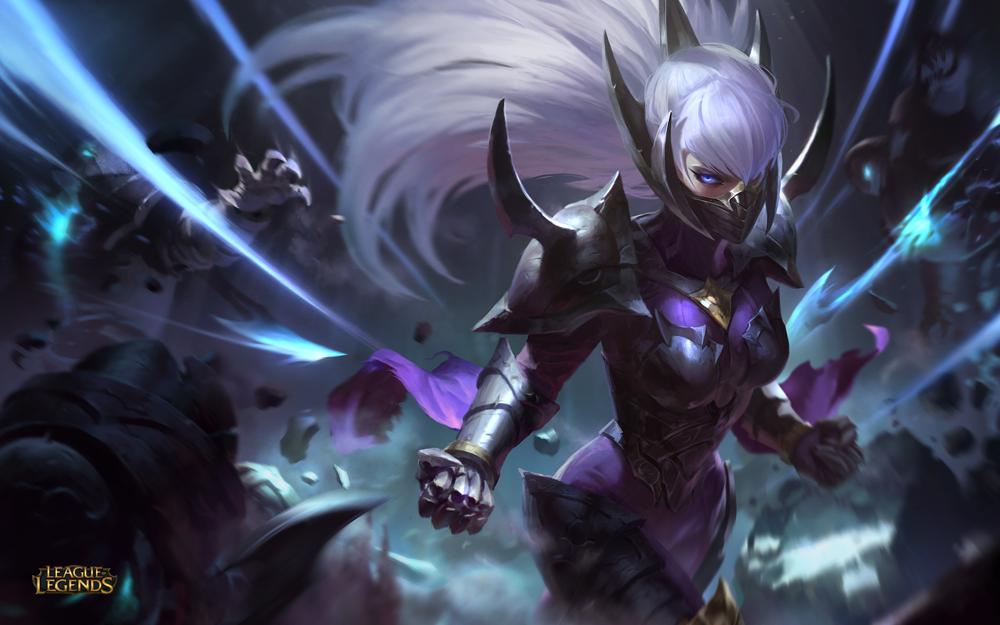

Tryndamere

Tryndamere is a high scaling champion with a lot of sustain that makes him one of the safest picks especially if you don't know who the enemy top laner is and you are not wanting to get countered.
In arguably every matchup, Tryndamere will be able to mantain even farm and more than often not, be able to gain a lead if played correctly.
Tryndamere is the best split pushing champion in the game with his high mobility and often high attack speed and damage as well as with his ult that allows him to easily tower dive just about any enemy.
Irelia

Irelia is one of the funnest champions in the game to play. Although she does struggle in a couple matchups and can easily fall behind, she is also one of the easiest champions
to snowball with. Irelia's level 1 all in is one of the best in the game assuming you correctly stack up your passive and conquerer before going in. Because of this you can almost always
get the early game advantage and potentially snowball a lead all the way to the end of the game. Irelia's teamfighting is also one of the best with her ultimate ability throwing out a wall
that slows other champions by 90% if walked through as well as marking them allowing Irelia to use her Q an insane amount of times. Although Irelia is a harder champion to master,
she can be one of the most rewarding.
Akali

Akali is known as one of the most annoying champions to play against. With her ability to jump all over the place and throw out a shroud that lasts a ridiculous amount of time, it makes it almost impossible
to tower dive her, and makes her easily be able to tower dive you. Akali takes a lot of practice and has a lot of outplay potential. Akali is one of those champs that can kill you out of nowhere without warning
and make you mad at riot.